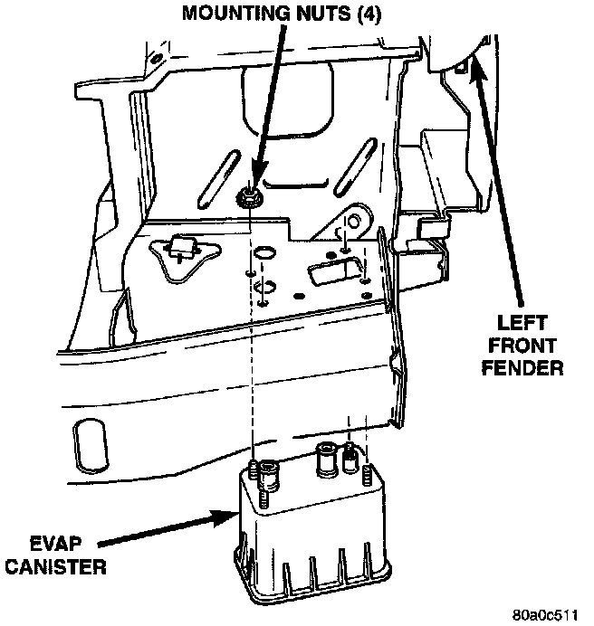

Evaporative Emission Control Canister: Description and Operation
EVAPORATION (EVAP) CANISTERFig. 2 EVAP Canister Location:

A maintenance free, EVAP canister is used on all vehicles. The EVAP canister is located below the left front headlamp (Fig. 2). The EVAP canister is filled with granules of an activated carbon mixture. Fuel vapors entering the EVAP canister are absorbed by the charcoal granules.
Fuel tank pressure vents into the EVAP canister. Fuel vapors are temporarily held in the canister until they can be drawn into the intake manifold. The duty cycle EVAP canister purge solenoid allows the EVAP canister to be purged at predetermined times and at certain engine operating conditions.
Vehicles equipped with the California Emission Package are also equipped with a Leak Detection Pump.
NOTE: The evaporative system uses specially manufactured hoses. If replacement becomes necessary, only use fuel resistant hose.